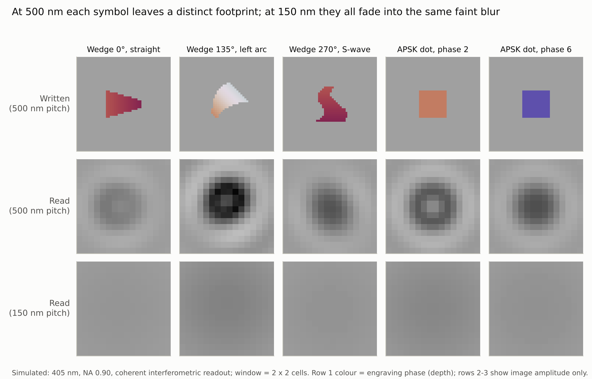
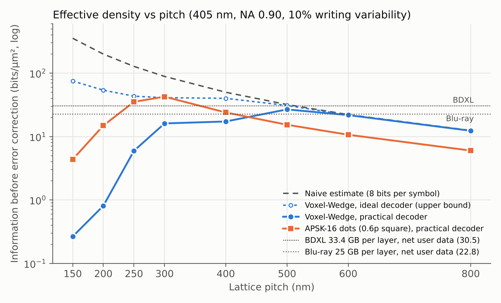
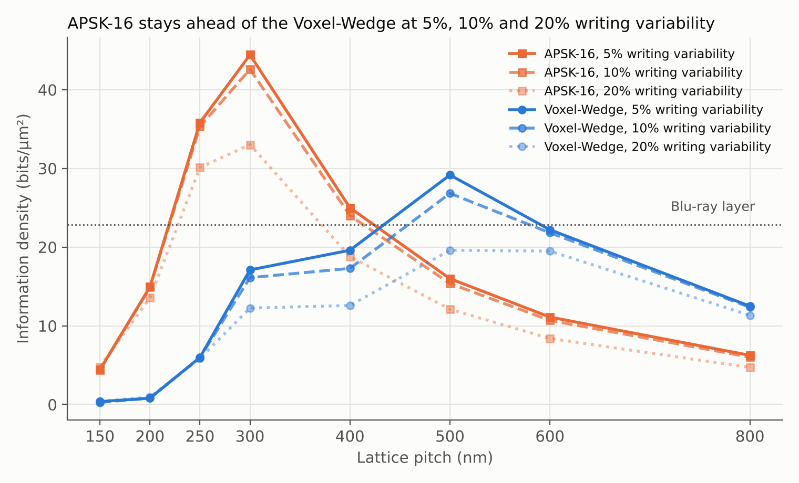
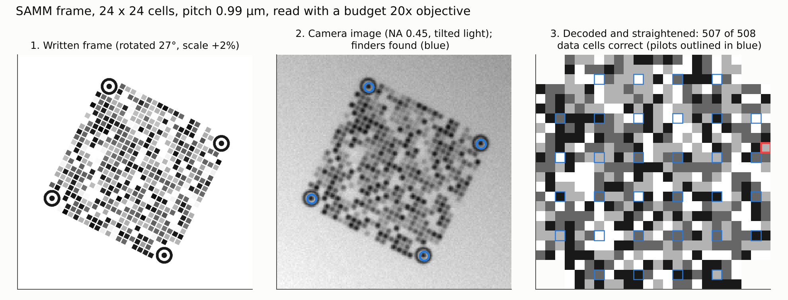

Data in glass that a cheap microscope can read at any angle
An open simulation study of archival storage in laser-written glass, with a self-aligning 2D code for low-cost readers.
I am not a professional physicist. 4D-VODS started as a geometric intuition (storing data in the shape of engraved symbols) and grew into this conceptual study and simulator, built with the help of AI tools on standard diffraction optics. Corrections from specialists are very welcome.
Turn the frame
Illustration of the frame layout. The four bullseyes look the same at every angle, so a reader finds them with one correlation and needs no motorised stage. In the simulator they are detected in the camera image; here they are drawn from the known geometry.
Two layers in one piece of glass
Status: concept stage, checked only in simulation. No physical sample has been written or read yet. The numbers compare design options under the same modelled physics; they are not claims about a finished device.
Successor: CUNEUS (doi:10.5281/zenodo.24325753) starts from the lessons of this study and computes the lattice, the alphabet and the decoder from the optics of the reader.
Glass written with a femtosecond laser can keep data for thousands of years without power. The weak point is the reader: today's glass and ceramic archives need laboratory optics. 4D-VODS pairs a dense data layer for the data centre with a code that an ordinary microscope camera can find, orient and decode on its own.
High-density data layer
42.6 bits per µm² before error correction
About 47 GB per layer of a 12 cm disc. After pilots and error correction, roughly 35 bits per µm²: about 1.15 times a BDXL layer (estimate, not yet simulated).
- Symbol
- Square dot, 0.6 × pitch, with 8 depths × 2 reflectances (APSK-16, 4 bits)
- Medium
- Metallised relief sealed under a cover layer
- Pitch
- 300 nm
- Reader
- Interferometric microscope, 405 nm, NA 0.90
Self-aligning micro-matrix (SAMM)
599 of 600 frames aligned
At any rotation, ±3% scale and tilted light, read by bright-field cameras from an entry-level 10× objective to a 40× objective.
- Symbol
- Square dot with 4 grey levels (2 bits)
- Pitch
- 1.1 × λ/NA of the reader (0.69–1.78 µm at 405 nm)
- Medium
- Laser-ablated absorbing film on the glass
- Density
- Up to 3.75 bits per µm² at 405 nm (about 47 MB per cm²)
What the simulation found
The project started from an 8-bit "Voxel-Wedge": one asymmetric engraving whose direction, depth, curvature and reflectance each carry bits. At 150 nm it would hold 356 bits per µm². The simulator shows why it cannot: the optics resolve about 225 nm, so shape-encoded bits vanish first. Small multi-level dots carry more information at small pitch.




| Reader | NA | Pitch | Frames aligned | Symbol error | Data per cm² |
|---|---|---|---|---|---|
| Entry-level 10× objective | 0.25 | 1.78 µm | 200 of 200 | 0.02% | about 7 MB |
| Budget 20× objective | 0.45 | 0.99 µm | 199 of 200 | 0.25% | about 22 MB |
| Budget 40× objective | 0.65 | 0.69 µm | 200 of 200 | 0.02% | about 47 MB |
Ideas that did not survive
Differential angle coding handles rotation but makes about three times more errors than a known pilot symbol every 16. Run-length glyphs written on the medium lose to ordinary software compression by 4 to 6 times on real data. Both results are in the white paper, together with everything the model leaves out.
Where it could be useful
- Product marking and anti-counterfeitingA microscopic code in glass, sapphire or ceramic on aircraft parts, medicines or artworks, checked with a handheld reader at any orientation.
- Data on the object itselfSerial numbers, calibration data or a manual engraved on a sensor window or watch crystal, readable for the object's whole life.
- Long-term archivesNational archives, libraries and film heritage, where the SAMM layer can carry the instructions needed to decode the rest.
- Data-centre cold storageBackups and datasets written once, kept without power and never migrated.
- Records that must not changeLegal, financial and medical records that cannot be altered or encrypted by ransomware once written.
- Time capsulesArchives meant to be read with simple optics long after today's computers are gone.
Reproduce every number
The simulator is plain Python with fixed random seeds, so a full run gives exactly the published results. Every result file records the command, commit and software versions that produced it, the optics are checked against closed-form diffraction theory, and every number quoted on this page is checked automatically against the results.
pip install -r requirements.txt
pytest -q # ~50 tests, about 1 minute
python -m vods validate # physics checks against theory
python -m vods check # every published number vs the results
python -m vods run samm --config configs/quick.toml # quick check
python -m vods run datalayer --config configs/datalayer.toml
python -m vods run samm --config configs/samm.toml
python -m vods figures # all charts (PNG, PDF and CSV)The raw results behind every figure are in the results folder, the validation report is in VALIDATION.md, corrections to earlier versions and two limits found after v1.1.0 are in ERRATA.md, and the design history from the first hand-drawn triangles is in HISTORY.md.
Cite this work
Guettal, H. (2026). 4D-VODS: optical data storage in glass with a self-aligning code for low-cost readers, version 1.1.0. Zenodo. DOI assigned on release.
Related work this study builds on: Microsoft Project Silica, 5D optical storage from the University of Southampton, Cerabyte ceramic storage, Blu-ray and BDXL, holographic storage, and QR, Data Matrix and Aztec codes. Every result can be checked by re-running the code.